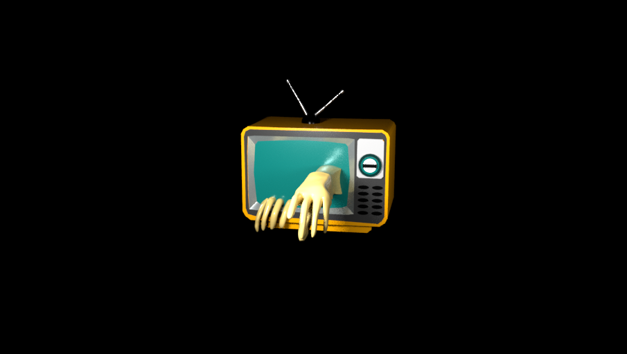

"Ghost TV"
8.1.20
Ever watch the movie "The Ring"? I can't say I have but one night while thinking of what I should make a thought came to me. I started to think of what people might have been scared of when they were younger, Then I realized a human arm coming out their TV at night might have done the trick, ha.